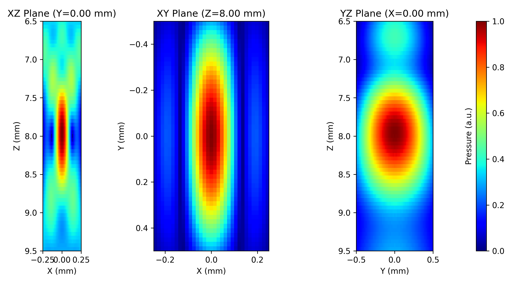

PyField Documentation¶
PyField is a Python acoustic field simulator based on the Tupholme–Stepanishen Spatial Impulse Response (SIR) method. It models arbitrary transducer geometries as collections of rectangular patches and computes pressure fields via convolution.
Installation¶
Or, inside the cloned repository:
Quick start¶
import numpy as np
from pyfield.psimulation import PyField
from pyfield.transducers import LinearArrayTransducer
from pyfield.utilities import plot_slices_2d
# Define transducer
tx = LinearArrayTransducer(
n_elements=64,
element_width_mm=0.25,
element_height_mm=12.0,
kerf_mm=0.05,
no_sub_x=2,
no_sub_y=4,
frequency_Hz=5e6,
)
tx.compute_delays(focus_mm=[0, 0, 30])
tx.compute_apodization(focus_mm=[0, 0, 30], FoverD=2.0)
# Define field grid (mm)
field_points = {
"x_extent": [-5, 5],
"y_extent": [-0.5, 0.5],
"z_extent": [5, 55],
"dx": 0.1,
"dy": 1.0,
"dz": 0.2,
}
# Run simulation
sim = PyField(tx)
x, y, z, p = sim(field_points, method="auto")
# Visualize
plot_slices_2d(x, y, z, p, db_scale=True, vmin=-40)

Sections¶
| Page | Content |
|---|---|
| transducers.md | All transducer types and their parameters |
| simulation.md | PyField simulator — methods, excitation, output |
| visualization.md | Matplotlib and PyVista plotting functions |
| brain_atlas.md | BG_Atlas — anatomical atlas registration |
Numbered examples¶
| File | Description |
|---|---|
example0_abstractsimu.py |
Matrix array — abstract simulation |
example1_monochrom_focus.py |
Linear and matrix — monochromatic focused field |
example2_ratbrainzones_focus.py |
Rat brain — zone-focused simulation |
example3_transient_focusing.py |
Transient (pulsed) pressure field |
example4_linear_divergingwaves.py |
Linear array — diverging waves |
example5_transducer_gallery.py |
All transducer types visualised |
Citation¶
If you use PyField in your research, please cite it using the following reference: